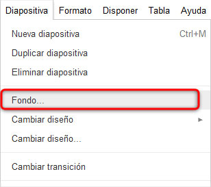
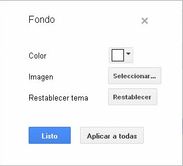
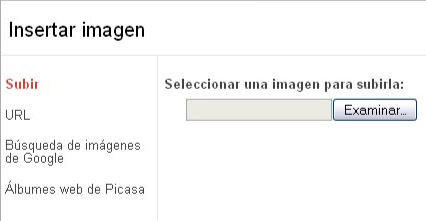
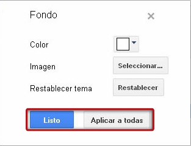
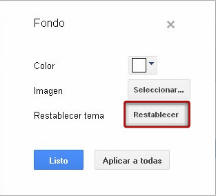

Cuando creamos una presentación podemos personalizar el fondo de las diapositivas para adecuarlo a nuestras necesidades. La aplicación nos ofrece varias posibilidades. Veámoslas.
Si lo que deseamos es modificar el fondo de nuestras diapositivas pincharemos sobre el menú Diapositiva y elegiremos la opción Fondo...

Se abrirá una pequeña ventana, que nos ofrecerá dos alternativas para cambiar el fondo: cambiar el color de fondo según una amplia paleta de colores o seleccionar una imagen subida por nosotros.

Pincharemos sobre Seleccionar. Aparecerá entonces una nueva ventana desde la que podremos subir la imagen desde nuestro ordenador o desde una URL. También nos ofrece la posibilidad de realizar una búsqueda de imágenes desde Google, además de utilizar imágenes de álbumes web de Picasa.

En el caso de cargar una imagen desde nuestro PC, pincharemos sobre Examinar. Se abrirá una ventana de carga de archivos. Seleccionaremos la imagen deseada y pulsaremos Abrir. Terminaremos pinchando en Subir.
Hecho esto, volveremos a la ventana inicial. Podremos aplicar este fondo a todas las diapositivas con la opción Aplicar a todas. Si sólo queremos aplicarlo sobre la diapositiva seleccionada en un primer momento pincharemos sobre Listo.

En el caso de querer restaurar el Tema inicial de nuestra presentación, solo tendremos que pinchar sobre la opción Restablecer.
